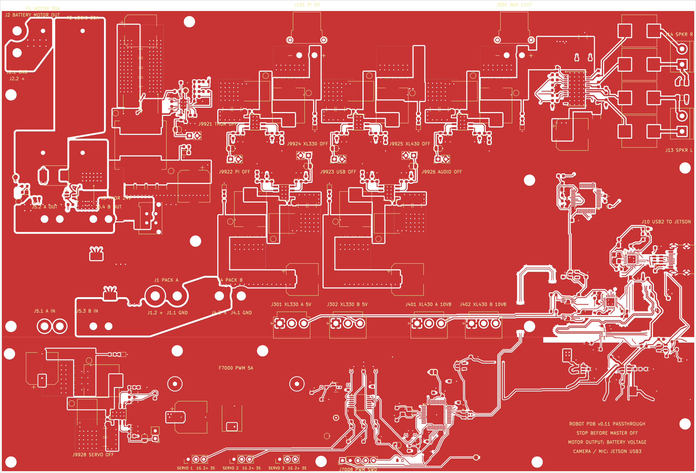
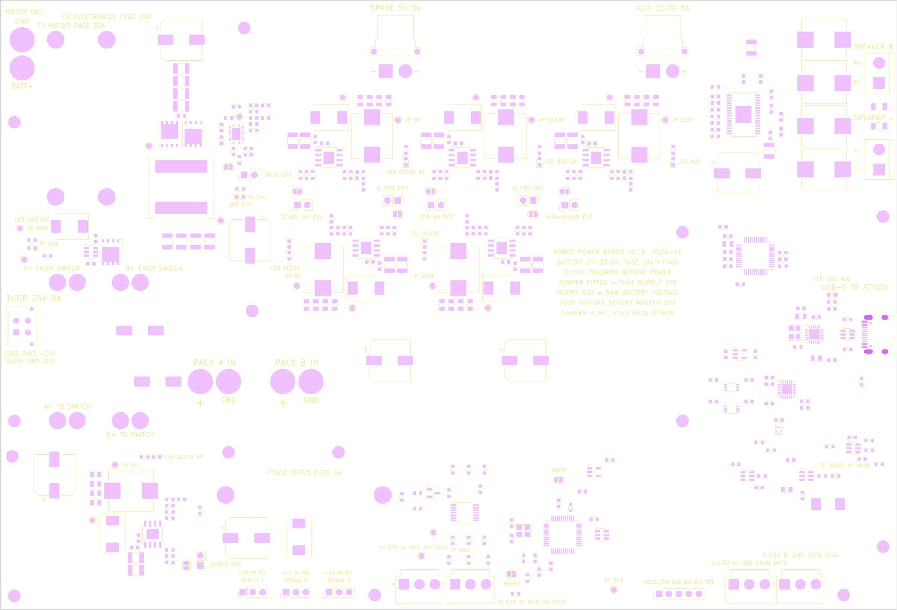
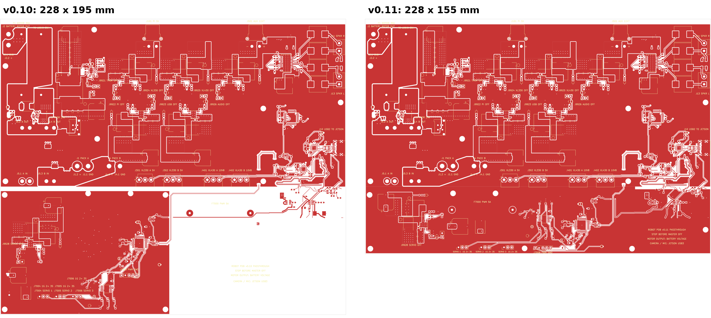
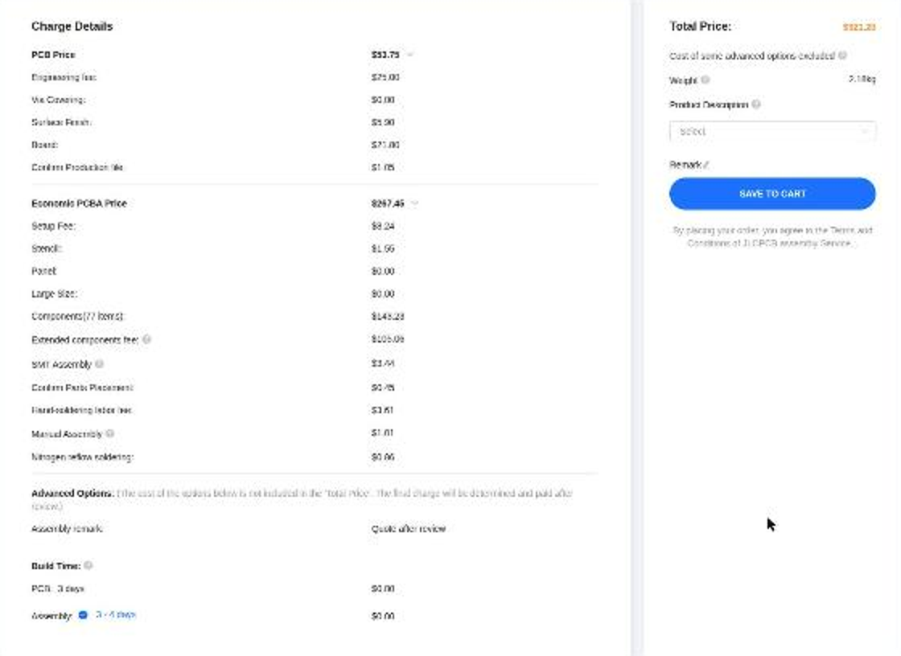
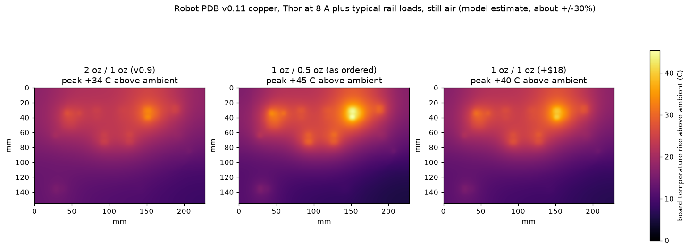

Robot power board v0.11: plain-language walkthrough
Reading this as a visitor? This page was written for the board's owner, so "you" means Logan, and the buying and bench instructions are his notes to himself. The board
has not been ordered; please do not order it from these files. The public summary and the questions open for review are in the
README.
Written 10 November 2026 for the owner. Engineering detail and evidence are in
the v0.11 handoff. Text shown like THIS is printed on the board.
Where things stand. Version 0.11 of the board is saved in the JLCPCB cart, unpaid,
as Robot_PDB_v11_Gerbers_Y8 at $321.20 before shipping: five bare boards, two of them assembled.
That is $21.20 over the $300 target: $17.12 for the better Thor coil and $13.28 for the six higher-voltage regulator coils you asked for, less what the smaller board saved. Nothing has been ordered.
No hardware exists yet and nothing has been measured.
Before you pay, two things are still open.
- Nobody independent has reviewed the final version. The second AI reviewer (Gemini Argon) saw an earlier v0.11 and then ran out of quota.
Moving the plugs to the edges, the new labels, the placement corrections and the coil swap all came after its review.
- The big round capacitors and the cheaper assembly line's oven temperature have not been confirmed compatible. That is a question for JLCPCB.
What this board does
It is the robot's power strip and USB hub in one. Two battery packs come in, pass through your external master switch,
and the board hands out every voltage the robot needs. It also gives the Jetson one USB cable that reaches the speakers,
the Dynamixel servos and three small hobby servos.
- Motors: battery voltage goes straight through a fuse to your existing motor controllers. The board does nothing clever here.
- Jetson Thor: a 24.3 V supply good for the 8 A the Thor kit can draw.
- Servos: 5 V for the XL330s, 10.8 V for the XL430s, and a separate 5 V for three MG90S hobby servos.
- Sound: a USB sound chip and a stereo amplifier for two speakers.
- Spare outputs: a 5 V / 5 A output and an 11.7 V / 5 A output ("AUX") for your own gear.
The two 30 A fuses
Right after your master switch the two packs join into one battery bus, and two fuses split that bus into two protected branches.
F1 feeds only the motor output. F2 feeds everything else on the board. A short on one branch blows its fuse
without taking the other down. Neither protects the wires between a pack and the board, so fit a fuse at each pack as well.
What plugs in where
The board is 228 mm wide and 155 mm tall. Every plug is at an edge, so an enclosure needs openings on its sides, not its lid.
The battery, switch and motor connections are soldered wires; they can leave through a grommet anywhere.
Orange: battery-side wires you solder. Grey: fuses you fit. Blue: power outputs. Purple: signal and audio.
| Printed on the board | Edge | Connector | What it is | Who fits it |
|---|
| PACK A IN PACK B IN | inside, left | XT60 pigtails | The two battery packs. Each pad pair is marked + and GND. | You solder |
| A+ TO SWITCH A+ FROM SWITCH and the same for B | inside, left | Wire pads | Each pack's positive goes out to your master switch and comes back. The switch breaks both pack positives. | You solder |
| F1 MOTOR FUSE 30A F2 ELECTRONICS FUSE 30A | inside, top left | Fuses | See above. | You solder |
| MOTOR OUT with GND and BATT+ | left, top corner | Wire pads | Fused battery voltage to your motor controllers. The upper pad is ground. | You solder |
| THOR 24V 8A | left | Micro-Fit, 4 pin | 24.3 V to the Jetson Thor with the ready-made Molex cable. EDGE PINS +24V, INNER PINS GND. | Factory |
| SPARE 5V 5A | top | XT30 | 5 V for your own gear. Marked + and -. | Factory |
| AUX 11.7V 5A | top | XT30 | 11.7 V, shared with the amplifier. | Factory |
| SPEAKER R SPEAKER L | right | Screw terminals | Marked R+ R- L+ L-. Neither speaker wire is ground. | Factory |
| USB-C TO JETSON | right | USB-C | One cable for sound, Dynamixel data and servo control. | Factory |
| XL330 A: GND 5V DATA and B | bottom, middle | JST VH, 3 pin | XL330 servo chains. The words are in the same left-to-right order as the pins. | Factory |
| XL430 A: GND 10V8 DATA and B | bottom, right | JST VH, 3 pin | XL430 servo chains. | Factory |
| SERVO 1 SERVO 2 SERVO 3 | bottom, left of middle | 3-pin headers | MG90S hobby servos. GND 5V SIG is printed above each, in pin order. | You solder |
| F7000 SERVO FUSE 5A | inside, bottom | Fuse | Protects the hobby-servo supply. | You solder |
| PROG: 3V3 GND DIO CLK RST | bottom | 5-pin header | Programming port for the hobby-servo controller chip. | You solder |
The actual board

Top copper layer with the printed labels.
Reading the board

Everything printed on the board (yellow) and every solder pad (pink).
The notes printed in the middle
| Printed | What it means |
|---|
| BATTERY 27-33.6V. FUSE EACH PACK | The board is for 8-cell packs. The on-board fuses do not protect the pack leads. |
| CHECK POLARITY BEFORE POWER | Meter every battery and output connection before the first power-up. Reversed packs will destroy parts. |
| JUMPER FITTED = THAT SUPPLY OFF | See "OFF jumpers" below. |
| MOTOR OUT = RAW BATTERY VOLTAGE | The motor output is not regulated. It is whatever the packs are at. |
| STOP MOTORS BEFORE MASTER OFF | Bring the wheels to a stop before opening the master switch, so spinning motors do not push energy back into a disconnected board. |
| CAMERA + MIC PLUG INTO JETSON | The board's USB is USB 2 only. Cameras and microphones go straight to the Jetson's own ports. |
Green lights
Each light shows that one supply is up. If a light is off, that supply is off, switched off by its jumper, or faulty.
| Printed | Lit when |
|---|
| LED BATTERY | Battery voltage has reached the electronics side (packs connected, master switch on, F2 good). |
| LED 24V | Thor supply is up. |
| LED SPARE 5V | Spare 5 V output is up. |
| LED USB 5V | The 5 V that runs the board's own USB chips is up. |
| LED XL330 LED XL430 | Dynamixel 5 V and 10.8 V supplies are up. |
| LED AUX | AUX / amplifier 11.7 V is up. |
| LED SERVO 5V | Hobby-servo 5 V is up (needs F7000 fitted). |
| LED USB HUB | The USB hub is running and talking to the Jetson. |
OFF jumpers
Seven two-pin headers, each next to a solder bridge with the same job: THOR OFF, SPARE 5V OFF,
USB 5V OFF, XL330 OFF, XL430 OFF, AUX+AUDIO OFF, SERVO OFF.
Leave them empty for normal use. Push a jumper cap on one and that supply switches off, which lets you bring the board up one section at a time.
Test points
Round bare pads for a meter probe, black lead on TP GND:
| Printed | Expect |
|---|
| TP BATT | Battery voltage, 27-33.6 V |
| TP 24V | 24.3 V |
| TP 5V (three of them: by the spare output, by the XL330 regulator, by the hobby-servo regulator) | 5 V |
| TP USB5V | 5 V |
| TP 10V8 | 10.8 V |
| TP 11V7 | 11.7 V |
| TP 3V3 | 3.3 V (hobby-servo controller) |
Other marks
- FIT U9903 BY HAND: the one chip the factory could not supply. See When it arrives.
- BOOT and RESET: solder bridges for the hobby-servo controller, left open. Only used if programming through USB instead of the PROG header.
- A small + beside a round capacitor or a plug marks its positive side.
How it got here

| Version | What changed | Quote |
|---|
| v0.9 | The reviewed design: thick copper, special layer build, gold finish. | $535.15 |
| v0.10 | Same layout made cheaper: thinner copper, factory-default layer build, tin finish, standard hole sizes, wider USB traces to suit, the cheaper assembly line, and a few part swaps. 230 mm tall became 195 mm. | $294.18 |
| v0.11 | The empty quarter is gone (195 mm became 155 mm), every plug is at an edge, the board is labelled, and every regulator coil is rated above the battery voltage. | $321.20 |
What v0.11 changed, in plain words
| Change | Detail |
|---|
| Hobby-servo corner laid out again | Its 5 V regulator sits in the bottom-left corner with its fuse beside it; the controller chip moved next to the USB hub. Everything else on the board stayed where it was. |
| Plugs moved to the edges | The Thor plug moved from the middle to the left edge. The four Dynamixel plugs moved down to the bottom edge. New copper carries their power there; the longest run (XL430) is about 78 mm and should lose about 0.03 V at full load, by hand estimate. |
| Labels | 76 printed labels replace the old terse ones. Part numbers are still not printed. |
| Review fixes | Sturdier connections for the surge protector and bulk capacitor on the hobby-servo supply, and a tidier 5 V plane under it. |
| Factory placement corrections | Thirteen parts were turned the wrong way in the file that tells the factory how to place them, including all six regulator chips and the Thor controller. This mistake was already in the v0.9 and v0.10 files. All are corrected and re-checked in the factory's viewer. |
| Coils rated for the battery | The Thor coil is the 60 V Coilcraft part again. The six smaller regulator coils changed from parts reported as 30 V to Vishay parts rated 75 V (your packs reach 33.6 V). Same values, same pads on the board. |
| Three mounting holes moved | Bottom row is now 3.5, 95.2 and 214.5 mm from the left edge, about 151.4 mm from the top. The other twelve did not move. |
What to buy
Not yet; see the red box at the top. When you are ready, the entry is Robot_PDB_v11_Gerbers_Y8. It has two lines that go together:
the boards ($53.75, quantity 5) and the assembly ($267.45, quantity 2). Tick the Y8 checkbox and both are selected.

It is the only entry in the cart. The older entries (Y2 to Y7) were removed on 10 November 2026 because none of them should be ordered.
Shipping, tax and any coupon are added at checkout. The factory's estimate for shipping was about $32. Prices move: the same parts list cost $2.52 more in the afternoon than in the morning.
Decide before paying
- Mounting and enclosure. Check the hole pattern and plug positions against your robot. Ask if you want a dimensioned drawing.
- Finish. The order uses lead-free tin. Gold is flatter and kinder to the tiniest chip on the board, for about $16 more.
- Stock. Two chips were low at the factory today. If the cart flags a shortage, stop and ask rather than accepting a substitute.
Also buy separately
- One TLV3011BIDBVR chip per assembled board (about $2.78). The "B" matters. You fit it by hand at FIT U9903 BY HAND.
- Fuses: two 30 A (Littelfuse 0505030.MXEP) and one 5 A (Schurter 8020.5075.PT) per board, plus a fuse at each battery pack.
- The Thor cable (Molex 2147551042), XT60 pigtails, your master switch, pin headers, jumper caps, M3 standoffs.
- Chargers for your own gear: see Powering your gear.
After you pay
The order is set so the factory will not start on its own. Expect two emails asking for approval:
- Production file. Their engineers show how they will build the bare board. Check that the layer build says
JLC04161H-7628 and that they have not changed hole sizes or trace widths.
- Parts placement. A picture of every part on the board. Look at the parts with a dot or stripe: the dot must sit at the little white triangle printed by the chip, and each round capacitor's "+" must sit at the printed +. One capacitor (C20, by the big Thor coil) has no picture at the factory; ask them to confirm its "+" faces the printed +.
If either picture looks wrong, do not approve it. Send it over and ask.
When the boards arrive
You get five bare boards; two have the surface parts and most plugs fitted. They are not ready to run.
Soldering you must do on each assembled board
- Fit the TLV3011BIDBVR at FIT U9903 BY HAND. It is a small six-leg chip; this is the fiddliest job.
- Solder the three fuses: F1 MOTOR FUSE 30A, F2 ELECTRONICS FUSE 30A, F7000 SERVO FUSE 5A.
- Solder the pack pigtails at PACK A IN and PACK B IN (red to +), the motor wires at MOTOR OUT, and the four switch wires. Use 12 AWG and add strain relief; the board must not carry cable weight.
- Fit the three SERVO headers and the PROG header.
- Optional: the seven two-pin OFF headers.
Programming
The chip that drives the three hobby servos arrives blank. It needs its firmware loaded once through PROG before those servos will do anything. Everything else works without programming.
First power-up, in order
The full procedure is the bring-up checklist, written for v0.9; the steps are the same. The short version:
- Look over the board for solder bridges, then check with a meter that no output is shorted to ground.
- Fit jumper caps on all seven OFF headers. Nothing plugged into the outputs.
- Use a current-limited bench supply at 27-33 V on one pack input, not a battery. LED BATTERY should light; TP BATT should read the supply voltage.
- Pull one jumper at a time and check its light and test point: TP 24V, the three TP 5V, TP USB5V, TP 10V8, TP 11V7.
- Load the Thor supply with a dummy load up to 8 A before connecting the Jetson. Meter the Thor cable's polarity at the far end first.
- Run each supply at its real load for 15 minutes and check for heat (see Heat).
- Then USB: plug into the Jetson and confirm the sound card, both serial ports and the servo controller appear. Try the USB-C plug both ways up.
- Only then batteries, then servos, then motors.
Powering your own gear
"AUX" is just the name of the 11.7 V output. Both spare outputs use the small yellow XT30 plug, so each lead you plug in needs an XT30 on the end.
A Pi 5, a tablet and two small monitors add up to more than AUX can supply on its own (about 58 W, shared with the amplifier). Spread them out:
| Device | Plug it into | Why |
|---|
| Raspberry Pi 5 | SPARE 5V 5A, with an XT30-to-USB-C lead | That supply is otherwise idle. No extra converter. |
| Tablet | A USB-C charger module wired to the battery side through its own small fuse | It is the biggest load and the least essential. This keeps it off the board entirely. |
| Two monitors, plus the amplifier | AUX 11.7V 5A, through a 12 V USB charger module | About 2 A, comfortably inside the 5 A limit. |
- The Pi 5 only takes its full 5 A after negotiating with a smart supply. From a plain 5 V source it runs, but limits its own USB ports to 0.6 A unless you add
usb_max_current_enable=1 to its config file.
- A battery-side charger module must be rated well above 33.6 V input (look for 40 V or more). Ordinary "12-24 V" car chargers are not safe on the battery.
Heat
Short version: for your real loads a well-vented enclosure is enough. Fit a small fan if the box is closed, or if you expect several outputs near full load at once.
Thinner copper is the main thing given up to hit the price. This is a model of how warm the board gets from its real copper shapes, in still open air, re-run on the final v0.11 board.

Typical loads: Thor at 8 A, servo supplies at about 2 A, AUX at 4 A. Middle picture is the board as ordered.
| Spot | Typical loads | Every output at its full rating |
|---|
| AUX 11.7 V regulator (hottest in typical use) | +45 °C | +74 °C |
| Spare 5 V and XL430 regulators | +27 to +30 °C | +77 to +78 °C |
| Thor supply | +31 to +34 °C | +52 to +57 °C |
| Amplifier | +30 °C | +42 °C |
| Hobby-servo regulator (bottom-left corner) | +14 °C | +39 °C |
| New copper run to the Thor plug | +18 °C | +36 °C |
These are rises above the surrounding air.
- Typical use: about 70 °C at the hottest spot in a 25 °C room. Fine; the parts are rated to 125 °C.
- Everything at full rating at once: over 100 °C in open air. Too hot to run for long. Your robot is unlikely to do this, but it is the case to avoid.
- A closed box makes it worse. The air inside warms up and every number rises with it, commonly by 15–30 °C. Leave openings above and below the top half of the board (the row of regulators between the two XT30 plugs) so air can rise through, or fit a 40 mm fan blowing across that area.
- This is an estimate, good to roughly ±30%. On the bench, run each supply at its real load for 15 minutes with a thermometer. If something is too hot to keep a finger near, add airflow before trusting it.
Known risks, plainly
| Risk | What could happen | What to do |
|---|
| Final version not independently reviewed | A mistake in the moved plugs, the new power copper or the re-drawn servo corner could have slipped past the automatic checks. | Get a review before paying. On the bench, check every plug's voltage and polarity with a meter before connecting anything to it. |
| Capacitors and oven temperature | The cheaper line's oven may run hotter than the round capacitors are rated for. | Ask JLCPCB, or pay about $35 for the Standard line. |
| USB to the servos and sound | Two internal USB routes were inherited from an older layout with known shortcomings. | Test with sustained traffic. Fallback is an external USB-to-Dynamixel adapter. |
| Jetson USB pair | Sized for the layer build by calculation; not measured. | Test both plug orientations and unplug/replug. |
| Dynamixel data wiring now longer | About 55 mm added to each data line to reach the bottom edge. | Test at your real baud rate with all servos chained. |
| Tin finish on the tiniest chip | An uneven joint on the USB switch chip stops all USB. | Inspect it under magnification on arrival, or pay for the gold finish. |
| Heat | Modelled, not measured, and worse in an enclosure. Not designed to run every output at full rating at once without airflow. | See Heat. |
| Mounting holes and plug positions | The pattern changed. | Confirm fit before paying. |
The 30 A motor fuse is a fuse rating, not a promise that the board carries 30 A all day. The design assumes about 10 A to the motors.
How it was checked
- Design-rule check: zero errors and zero unconnected pads. Eleven cosmetic warnings, all inherited.
- Difference audit: a script compares v0.11 against v0.10 and passes only if nothing changed outside the hobby-servo corner apart from the recorded plug moves and their new copper, no part or connection changed anywhere, and the schematic still matches the board.
- Factory upload: the factory read the files as a 4-layer 155 × 228 mm board, matched all 82 lines of the parts list, and priced it.
- Placement check: every part that has a right way round was opened on its own in the factory's viewer. Thirteen were wrong and were corrected.
- Second opinion: Gemini Argon reviewed an earlier v0.11. Four of its findings held up and were fixed. Several did not: it said the diodes and lights were backwards (they are not) and that the regulator chips were placed correctly (they were not). It has not seen the final version.
- Coil ratings: read from Vishay's own datasheet: 75 V across the coil, and a pad pattern that fits inside the pads already on the board.
- Heat: modelled again on the final board, including a worst case.
- Not done: nothing has been built or measured. Heat, voltage-drop and USB figures are calculations or estimates.
Files: board revisions/v0.11/kicad/robot_pdb.kicad_pcb (fingerprint starts 9e2ac58e2b29),
factory package outputs/v11-order-preparation/package-9e2ac58e2b29/, quote record outputs/v11-order-preparation/factory-quote.json.
Glossary
| Bare board / assembled board | A bare board is just the printed circuit. An assembled board has the parts soldered on by the factory. You are buying five bare, two of them assembled. |
| Copper weight (oz) | How thick the copper layers are. Thicker carries more current and spreads heat better, and costs more. |
| Layer build ("stackup") | The sandwich of copper and fibreglass inside the board. The spacing between layers affects fast signals like USB. |
| Via | A small plated hole that connects copper on one layer to another layer. |
| HASL / ENIG | The coating on the bare pads before soldering. HASL is tin, cheap and slightly uneven. ENIG is gold, flat and dearer. |
| Basic / Extended parts | The factory keeps "Basic" parts loaded on its machines. Each "Extended" part type costs about $3 extra to load for your order. |
| Placement file | The list that tells the factory's machines where each part goes and which way round. |
| Regulator ("buck") | A circuit that turns battery voltage into a lower, steady voltage. Each output on this board has its own. |
| Inductor (coil) | A coil inside each regulator. It has a current limit ("saturation") and a voltage rating. |
| XT30 / XT60 | Yellow two-pin power plugs. XT60 is the bigger one on your batteries; XT30 is the smaller one on the 5 V and AUX outputs. |
| Pin 1 | The corner of a chip marked with a dot. It must match the mark on the board or the chip is in the wrong way round. |